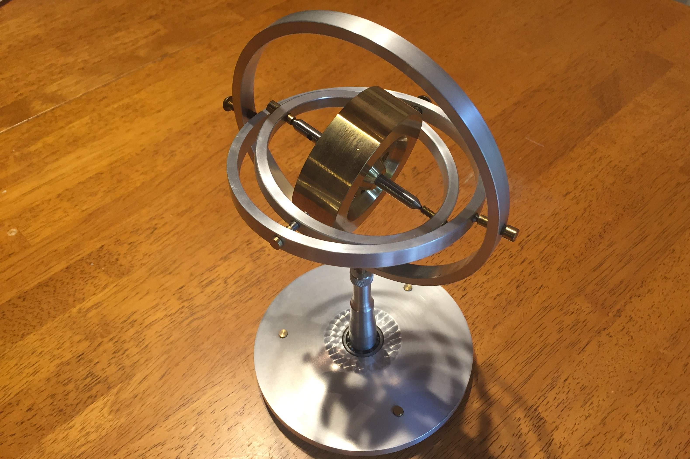

Gyroscope
Fall 2016
A fun desk toy
Video of the operation (Youtube)

I have no build pictures of this, it was just a small project I built over a weekend. This was based on a design by Chris at Clickspring that he made for Make Magazine. The flywheel itself is 3" diameter brass. The pivots and shaft are steel and a harder naval brass. The gimbal rings and base are aluminum. To avoid needing to make too many rings, the last gimbal degree of freedom is actually located in the base with a ball bearing, which lets the whole pedestal rotate.
The gyroscope out of it's gimbals, precessing when suspended on a string.